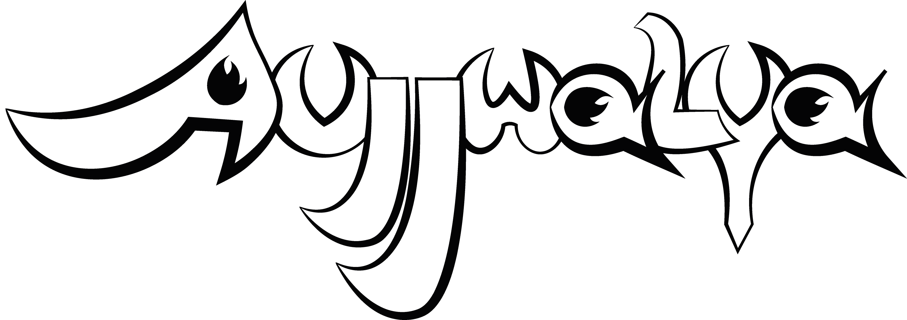
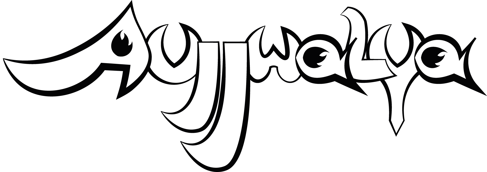

AUJJWALYA
A narrative-driven RPG prototype exploring elements of pan-asian culture, with a focus on visuals and world building.
Design Goals
The primary goal of this project was to explore various pan-asian cultures, inter pretting them and seeing how they build the game's world and mechanics.
The crucial point of this project was deciding on the importance of cultures of art; dance and music, and the roles they would play in both gameplay and narrative.
The Heart of The Project
The project would be nothing without the amazing and creative people who contributed their unique thought processes, creativity and determination.
While the original concept, artworks, gameplay, etc were things I came up with, the project would remain just another idea without my amazing team members behind it.
What I Learned
This project taught me the importance of team work, that sometimes ambition should be left behind in favour of a better product, a work of art. Managing and teaching my team also educated me on matters of team leading, conflict resolution, and project management.
I also gained experience balancing narrative ambition with systemic clarity, ensuring the player never felt lost even when outcomes were ambiguous, that they remained immeresed in the game world.
Gallery
 
